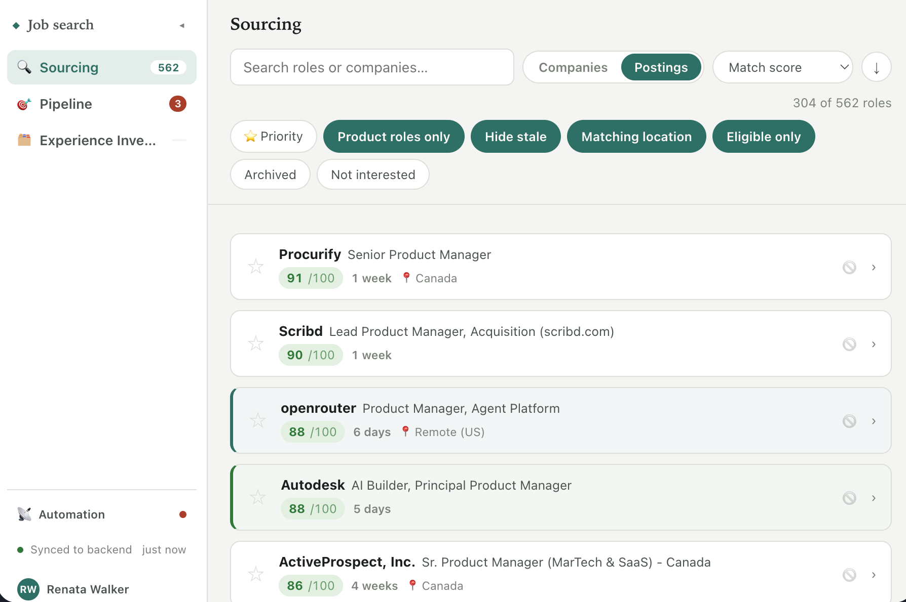
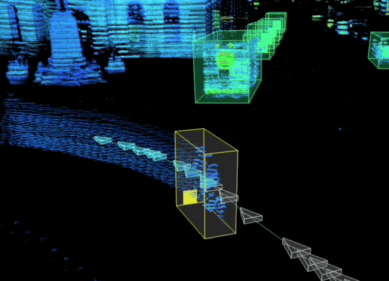
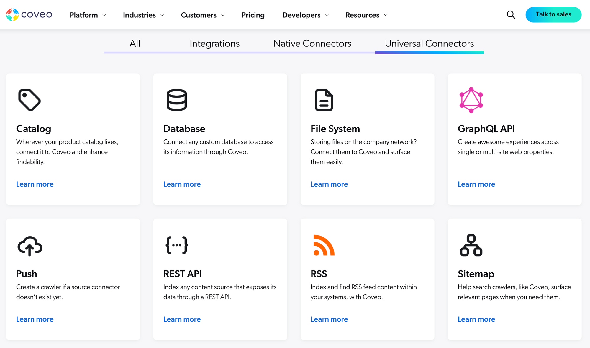
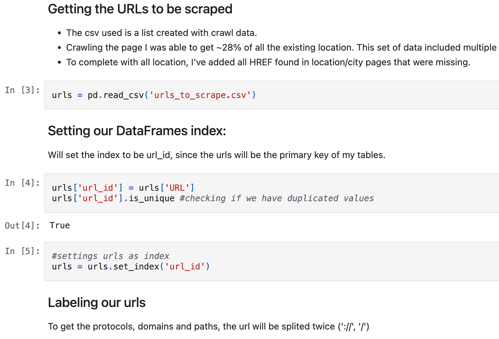

By day, I build products in high-complexity domains. I'm a 0-to-1 builder looking for something worth caring for next: mental health, sustainability, or something entirely unexpected. No ego, just craft and curiosity.
By night and on weekends, I'm a singer-songwriter, social dancer, and hiking enthusiast. My superpower? Infecting people with the excitement I have for solving complex problems.
Built a job-search pipeline

A full-fledged product (frontend dashboard, backend pipelines) that sources job postings daily and scores each one against real experience with evidence, not keywords. Built to minimize LLM token usage and plug into whichever model you already use, Claude or ChatGPT. The goal: take the boring part of a job search off your plate.
Self-built, self-hosted, already running daily for a few friends' searches.
Built a product from 0 to 1

Built Sama's Sensor Fusion platform: $7M in revenue impact, bookings share up from 3% to 45%. Also built AI-assisted tools (a 3x efficiency gain).
Spoke at 10+ industry conferences
10+ international keynotes and panels on LiDAR annotation quality, ADAS/AV data labeling, and training data safety, at Auto AI USA, Tech AD Europe, AVT Expo, and others.
Led native & universal connectors

Owned API connectivity for data ingestion: native, purpose-built connectors alongside push-API and generic REST-API gates for systems without one, covering both sides of the native-vs-generic, push-vs-pull tradeoff.
Scraped Breather into a job

Before being hired, scraped every public Breather coworking location and built a full analysis flagging underperforming locations to double-check. The team hired me off the back of it, opening a new data role for marketing and sales, even though the position I'd originally applied for was already filled.
Rebuilt an SMB's website
Full rebuild of the company website (+50% sessions, −30% bounce rate) and a new online quotation widget (+50% conversions, +30% sales). The site has stood as the business's main lead-generation channel since launch. Still true today.
Ser
Social dancing, most weeks: bachata, salsa, zouk. Whatever floor is playing.
Multi-day treks up to 50km total. Longest single-day push: 27km at Altos del Lircay in the Chilean Andes. Also done: 25km to Base Torres in Torres del Paine.
Five ten-day Vipassana courses, in complete silence, at S.N. Goenka's centers.